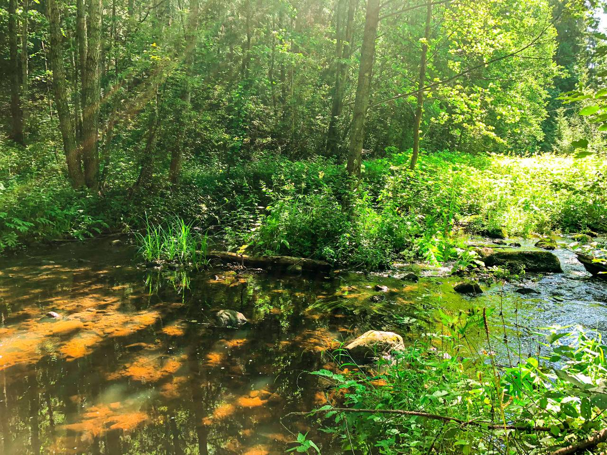
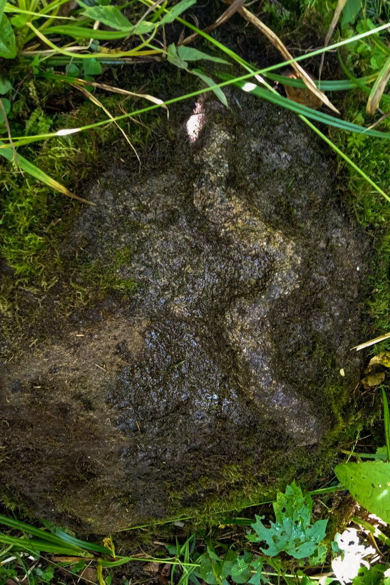
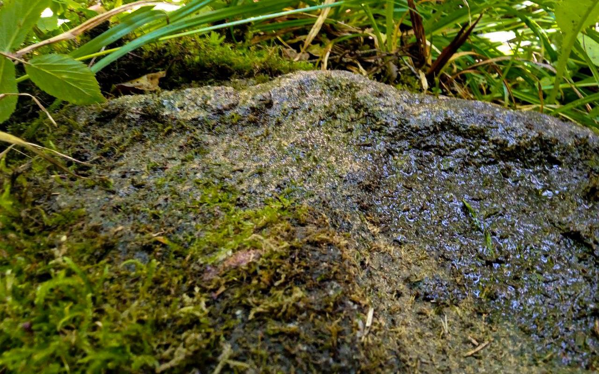

Смотрели ли на вас когда-нибудь камни? Чтобы оказаться под пристальным взглядом огромного валуна, посетите место, которое называется урочище Кундры. Оно находится около деревни Пешковцы на речке Лынтупка. Если идти туда от деревни через поле, в низине в лесных зарослях вы встретите отвалы огромных замшелых валунов. Живописными грудами они навалены среди старых елей и сосен. Пейзаж напоминает фильм из мира фэнтези или сказок про троллей, которые окаменели при свете солнца, но ночью обязательно оживут! Видно, что камни лежат тут уже много лет.

Недалеко отсюда находятся курганные могильники. Раньше, в язычестве, люди хоронили умерших в курганах. Сейчас археологи раскапывают их и находят много интересного. Местный краевед Алесь исследовал курган и случайно оказался на берегу Лынтупки.
 
В реке он увидел огромный валун, в котором высечено углубление в виде большого глаза, заметного даже с берега. Во многих культурах глаз – символ перехода в потусторонний мир. Он осмотрел этот камень и увидел, что глаз смотрит на берег. Пройдя по направлению «взгляда» камня, он обнаружил на берегу еще один необыкновенный валун. На нем были высечены символы: змея, головастик и глаз, который смотрит в небо. Змея и головастик рельефные, выпуклые и их легко обнаружить, счистив мох с верхушки камня. Контур глаза высячен, как углубление.
 
Змея – символ языческой богини Гельцини, сестры богини рока и деторождения Лаймы – капище которой также есть в этих местах. Гельциня покровительствует медикам и помогает людям перейти в мир иной легко. Головастик – символ зарождения жизни и знак богини рока Лаймы, которая по поверьям помогала женщинам в родах. А глаз – символ перехода в потусторонний мир.
Очевидно, что это место было культовым, на нем проводились ритуалы и обряды, связанные с этими богинями. А так как рядом находятся курганные могильники, скорее всего это был культ почитания предков.
Записала Алекс Працкевич